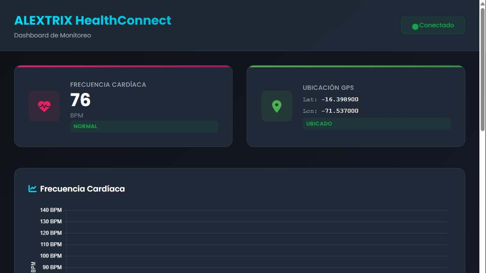
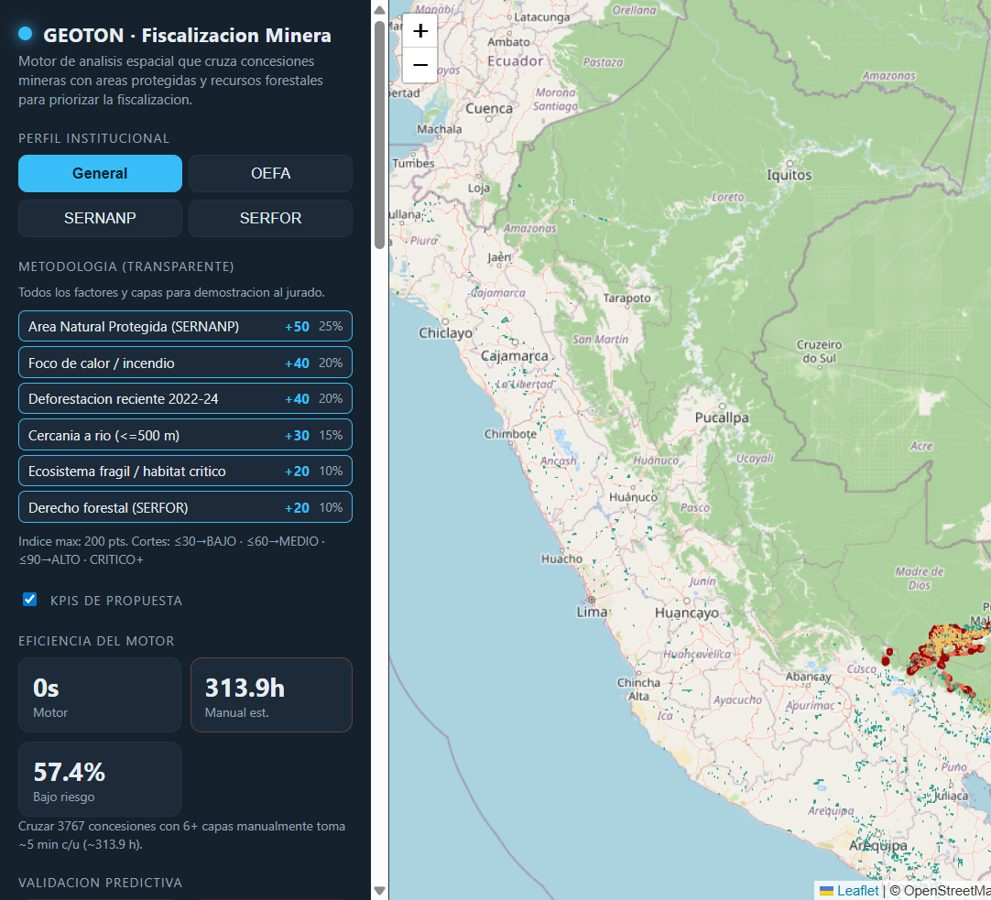
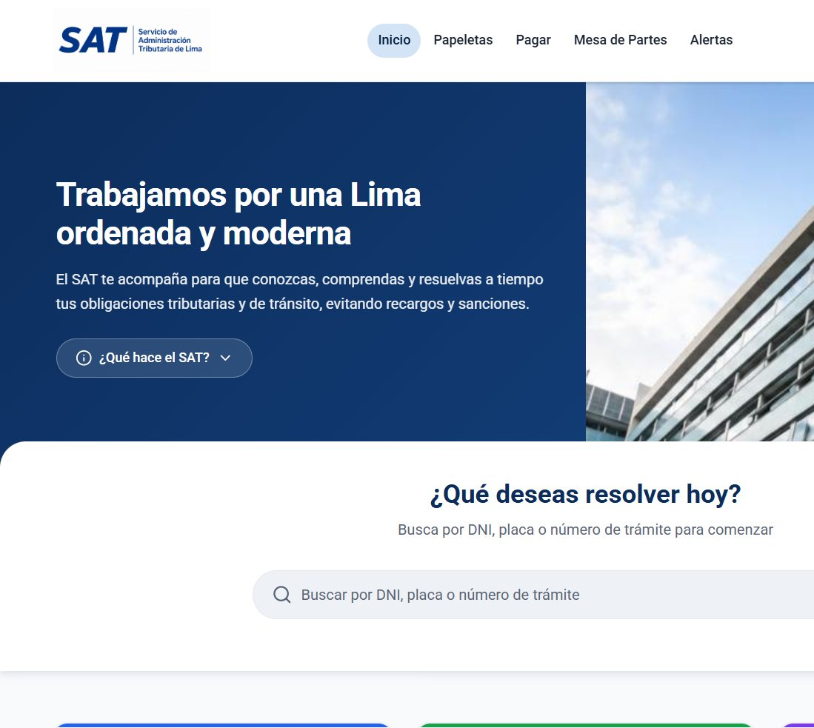
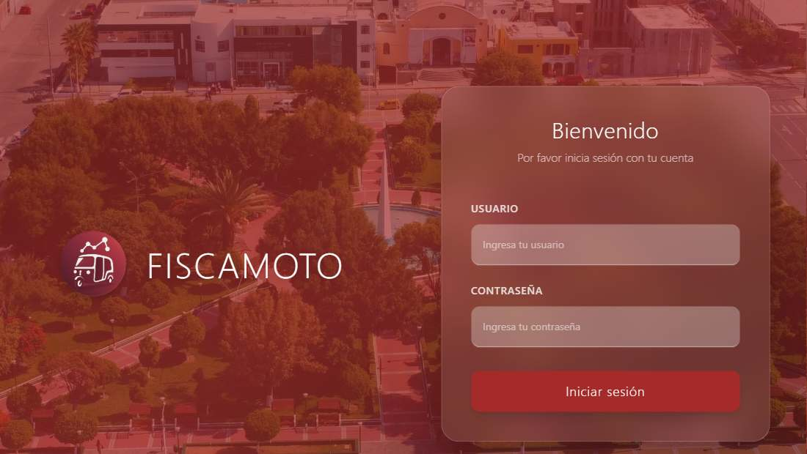
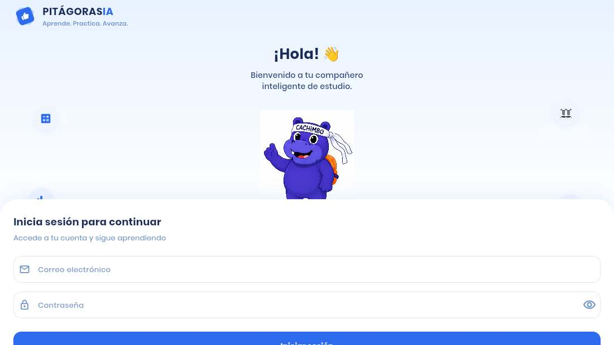
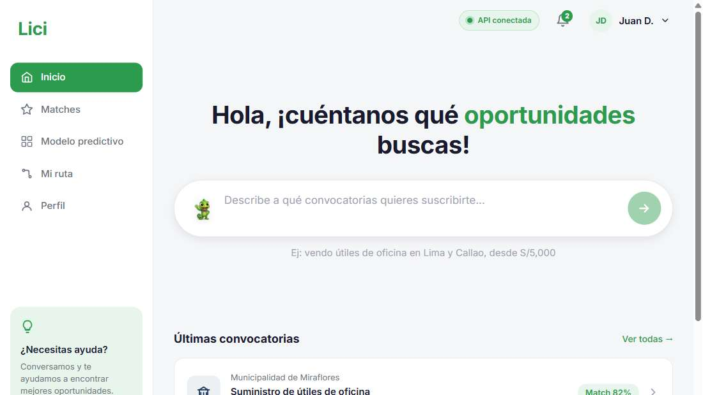
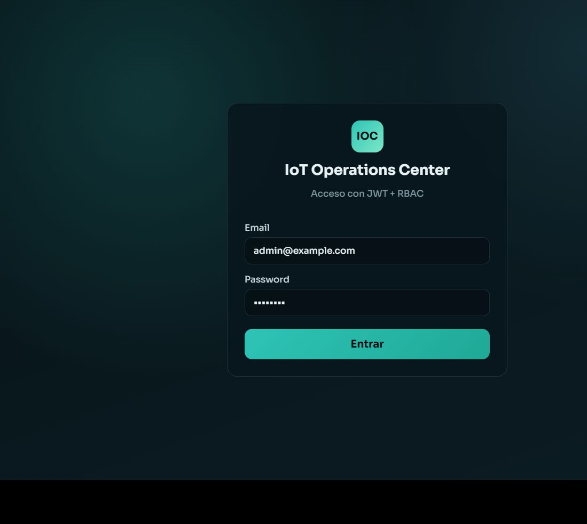
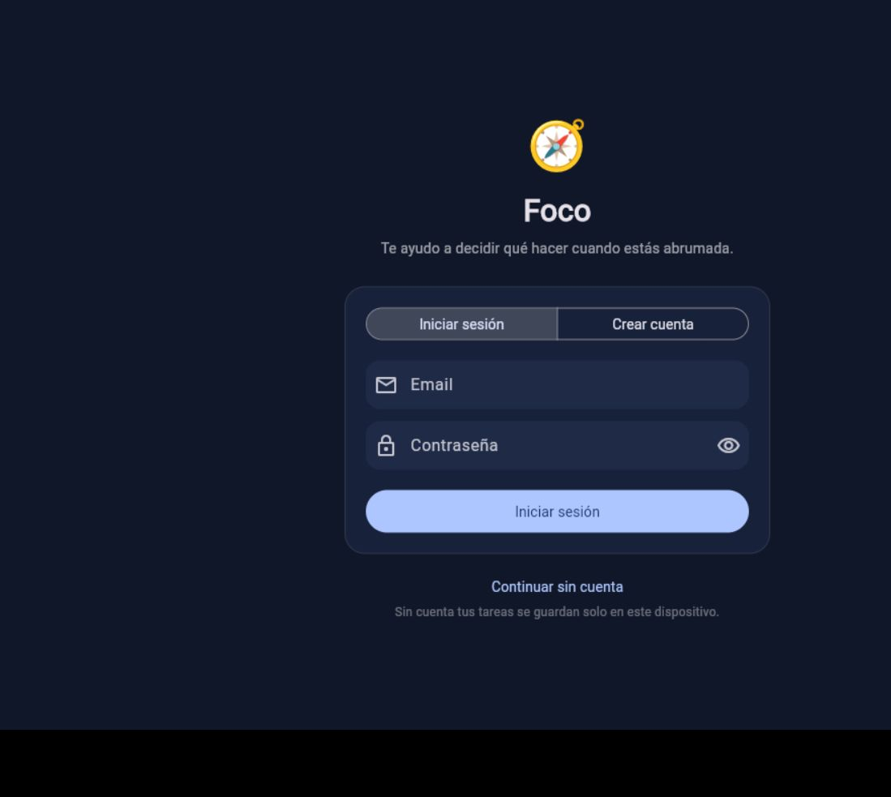

ALEXTRIX HealthConnect
Monitorea en vivo la frecuencia cardíaca y el GPS de un smartwatch, con API y dashboard, y avisa cuando el pulso sale del rango esperado.
IoT · Salud · Tiempo real
Desarrolladora de software
Construyo soluciones digitales que resuelven problemas reales.
Disponible para nuevas oportunidades
Soy egresada de TECSUP en Diseño y Desarrollo de Software y desarrolladora con enfoque backend y full stack. Me gusta convertir problemas reales en soluciones tecnológicas, y he trabajado en proyectos vinculados a gobierno, minería, salud e IoT.
Tengo experiencia construyendo APIs, aplicaciones web y móviles y sistemas orientados a datos, y actualmente busco seguir creciendo en ingeniería de software, IA y desarrollo de soluciones innovadoras, preferentemente en modalidad remota.
01
Cada proyecto es una solución a un problema real.

Monitorea en vivo la frecuencia cardíaca y el GPS de un smartwatch, con API y dashboard, y avisa cuando el pulso sale del rango esperado.
IoT · Salud · Tiempo real

Motor de análisis espacial que cruza concesiones mineras con áreas protegidas y bosques para priorizar la fiscalización.
Minería · Fiscalización

Portal del SAT de Lima para consultar papeletas, pagar deudas y seguir trámites desde lo que necesita el ciudadano.
Servicios públicos · Lima

Desarrollé la app móvil para fiscalizar mototaxis: conductores, vehículos y documentos. Está publicada en Google Play. En la plataforma web participé con correcciones puntuales.
Aplicación móvil · Gobierno

Preparación para exámenes de admisión con simulacros, diagnóstico académico y tutores de IA usando LLM y RAG.
Educación · IA

Plataforma para encontrar y recomendar licitaciones públicas según el perfil y las capacidades de una empresa.
Datos · Negocios

Panel para supervisar dispositivos IoT, con acceso según el rol de quien ingresa.
IoT · Operaciones

Ayuda a elegir qué hacer primero cuando hay demasiadas tareas y todo parece urgente.
Productividad
02
Creo en la tecnología como una herramienta para construir soluciones que mejoren la vida de las personas.